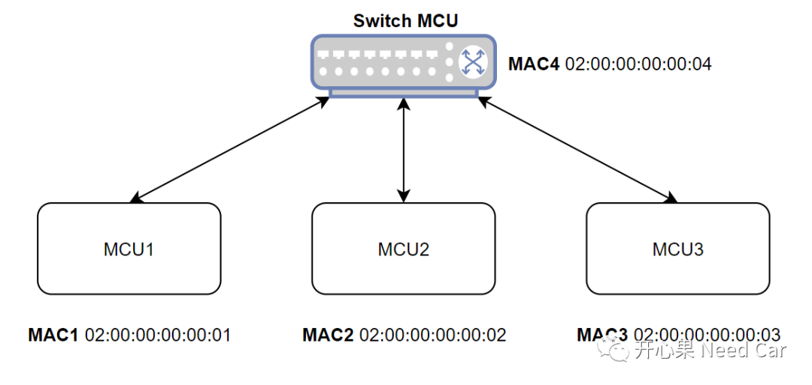
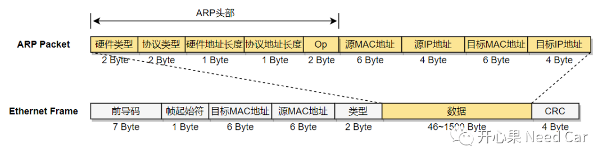
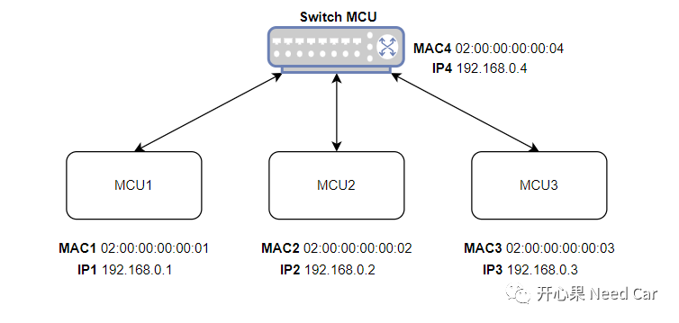
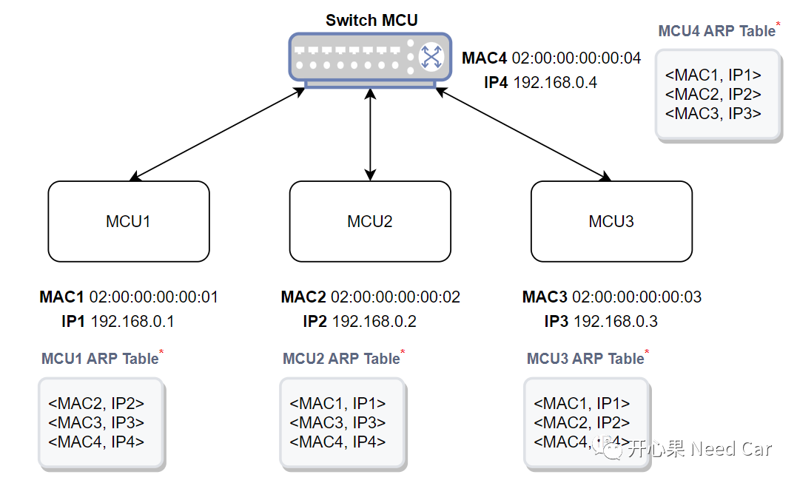
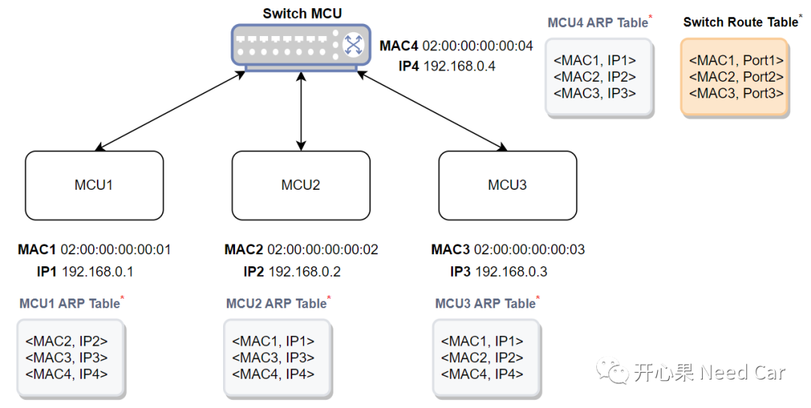
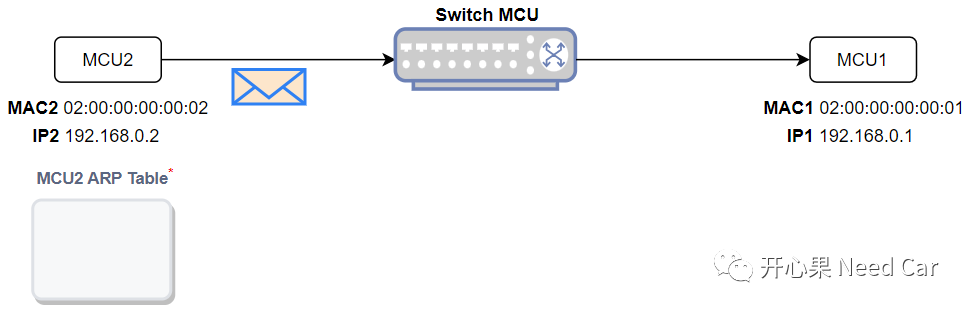
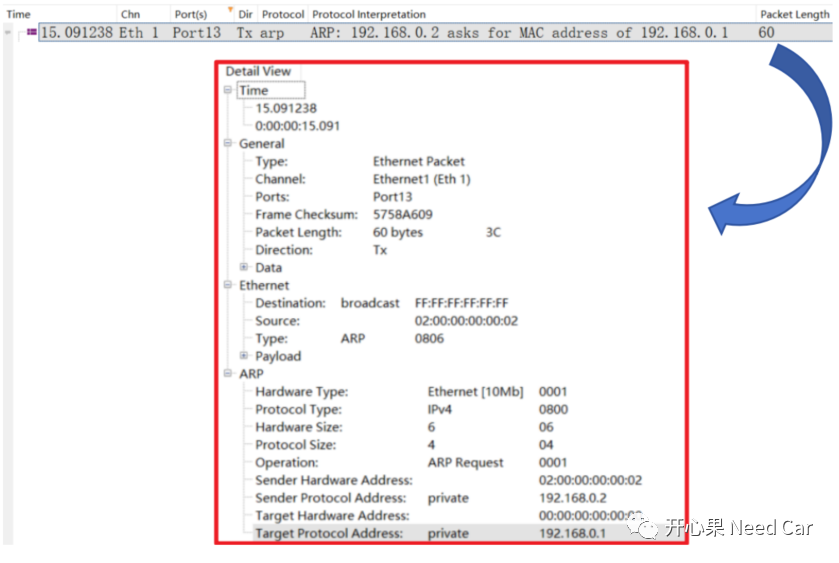
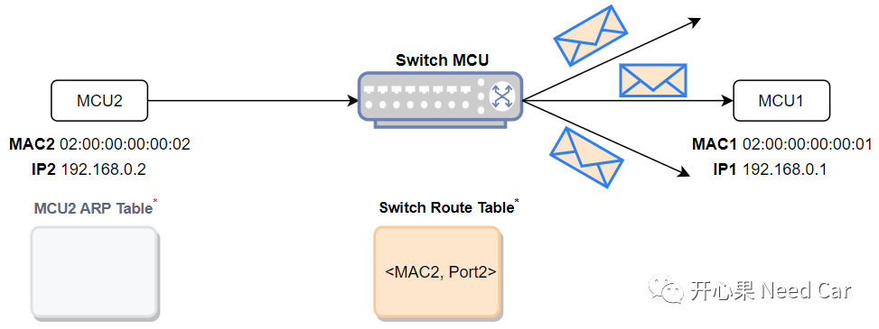
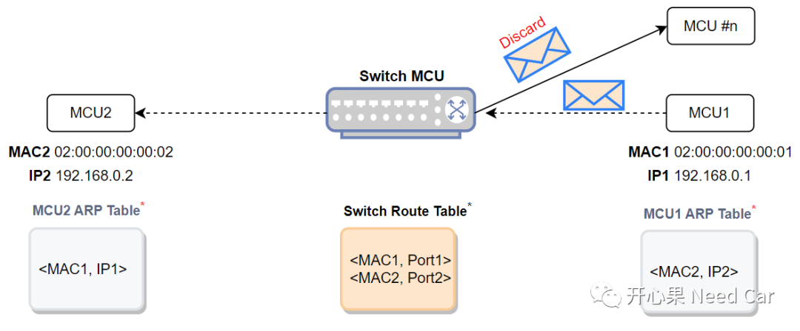
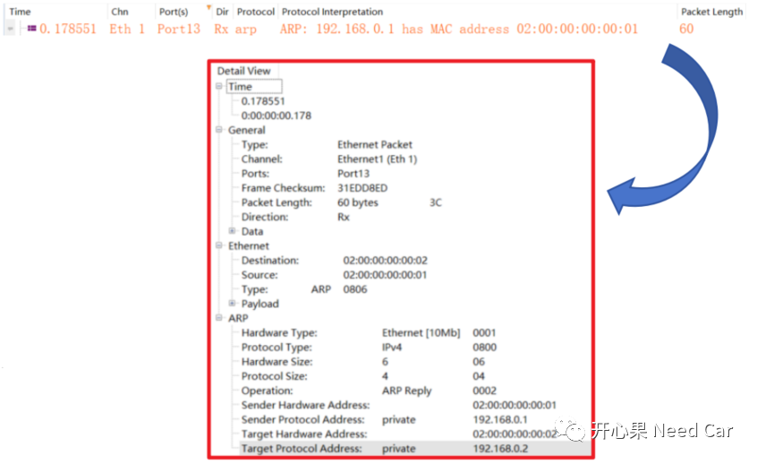

开心果 Need Car · 2023-11-20T18:43:00+08:00 · 微信原文
开发以太网的小伙伴，对ARP（Address Resolution Protocol，地址解析协议）已经见怪不怪。在控制器刚启动阶段，总线上会看到一些ARP报文。那么，问题来了，为什么在控制器启动阶段，会有ARP报文呢？ARP报文到底扮演着什么样的角色呢？本文，聊一聊ARP。
1、以太网通信基础
我们知道，以太网是点对点（Point-to-Point）的通信方式。如果两个以太网节点建立通信，发送节点首先需要知道和谁通信。发送节点如何知道和谁通信呢？答：MAC地址（Media Access Control Address）。MAC地址也称为网卡，每一个网卡分配唯一MAC地址（长度为6 Bytes）。所以，知道目标节点MAC地址，才能知道信息要发给谁。而在整车的网络拓扑中，节点之间的数据交互由交换机（Switch）进行二层转发，示意如下：

（一）ARP帧格式
不管何种总线，为了确保信息有效交互，会根据软、硬件层级，设计不同的通信协议。本文关注链路层的以太网帧和网络层的ARP协议，ARP报文封装在以太网帧的数据段传输，如下所示：

硬件类型（2 Byte）：表示硬件地址类型，eg：以太网为1
协议类型（2 Byte）：表示上层协议类型，eg：IPv4为0x0800
硬件地址长度（1 Byte）：表示硬件地址长度，eg：以太网为6
协议地址长度（1 Byte）：表示协议地址长度，eg：IPv4为4



2、ARP通信原理
（一）


解析：
发送节点发送ARP报文时，会包含发送节点的IP（192.168.0.2）、发送节点MAC（02:00:00:00:00:02）、目标节点的IP（192.168.0.1）；
由于不知道目标节点的MAC，所以，在ARP报文中，目标节点的MAC地址（上图中的Target Protocol Address）用全0x00表示；
由于发送节点不知道目标节点在哪个位置，所以，发送节点发送ARP请求时，使用广播的方式发送，即：Destination为全0xFF。
（二）
当交换机收到MCU2的ARP请求报文以后，发现：路由表中找不到目标节点的Port（初始阶段为空），于是，交换机向所有端口广播ARP报文（不包含接收端口），同时，缓存MCU2的MAC2和Port2，如下所示：

（三）

提示：非目标节点收到ARP报文以后，直接丢弃。
响应节点（MCU1）发送的ARP报文信息如下所示：

往期精彩回顾
工程问题：实现与需求偏离，导致EPB故障
CAN FD通信：数据段错误，错误帧的速率是500Kbps还是2Mbps？